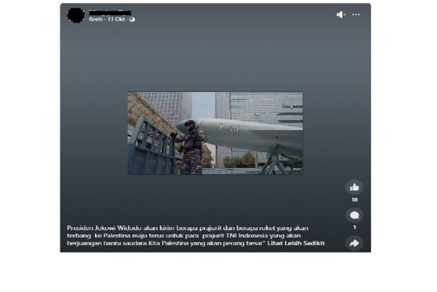

Ilustrasi - Rudal Hypersonic Air-breathing Weapons Concept (HAWC) dalam konsepsi seorang seniman. (Raytheon Missiles & Defense/HO via Reuters/as)
Jakarta (ANTARA/JACX) - Presiden Joko Widodo dikabarkan bakal mengirim roket ke Palestina untuk membantu perjuangan para milisi di sana. Wacana pengiriman roket itu dimuat dalam narasi seorang pemilik akun Facebook, yang juga dilengkapi sebuah video pendek menampilkan alat utama sistem senjata (alutsista) tersebut. Dalam cuplikan gambar yang dibagikan pada 11 Oktober 2023, alutsista yang diklaim sebagai roket itu tampak berwarna abu-abu dengan keterangan "P-15". Roket tersebut terlihat dibawa oleh kendaraan truk, serta dikawal seorang prajurit berseragam TNI. "Presiden Jokowi Widodo akan kirim berapa prajurit dan berapa roket yang akan terbang ke Palestina maju terus untuk para prajurit TNI Indonesia yang akan berjuang bantu saudara Kita Palestina yang akan perang besar," demikian isi narasi yang dibagikan di Facebook. Namun, benarkah Jokowi akan kirim roket bantu Palestina?
Tangkapan layar video berisi narasi yang menyatakan Presiden Jokowi akan kirim roket bantu Palestina (Facebook)
Penjelasan: Berdasarkan informasi yang dihimpun ANTARA, alutsista yang ditampilkan dalam video bukanlah roket, melainkan rudal. Menurut situs militermeter, roket dan rudal berbeda. Roket sebenarnya hanyalah peluru. Sedangkan rudal terdiri dari hulu ledak, roket pendorong, sistem "jamming" antiradar musuh dan sistem pemandu kendali ke arah sasaran. Rudal juga memiliki tingkat presisi cukup tinggi dengan kecenderungan meleset sekitar 50-100 meter dari lokasi sasaran. Video YouTube Indomiliter turut memperkuat keterangan bahwa gambar alutsista dalam konten di Facebook itu adalah Rudal P-15 Termit, yang memiliki jarak jangkau 80 kilometer. Rudal P-15 Termit dikenal sebagai rudal antikapal pertama milik TNI Angkatan Laut, tepatnya digunakan pada 1961 hingga 1965. Fakta selanjutnya adalah rekaman rudal yang dijaga anggota TNI sebagaimana di Facebook itu, tidak ada hubungannya dengan perang Hamas-Israel saat ini. Rudal yang dibawa dengan truk tersebut disiapkan untuk dipamerkan di Monas, Jakarta, guna memperingati HUT TNI Ke-78, pada 5 Oktober 2023.

menunjukkan alat pembaca piringan CD di Ruang Inklusi Perpustakaan Jakarta, Jakarta, Jumat (20/10/2023). ANTARA/Nadia Putri Rahmani
Selain itu, ada juga alat pemutar buku audio dalam bentuk piringan CD. Sama seperti "file reader", alat itu akan memutar buku audio dan mengeluarkan suara. Perbedaannya adalah apabila file berasal dari CD, suara yang direkam adalah berasal dari buku yang dibacakan oleh orang. Lalu, bagaimana dengan penyandang disabilitas yang lain? Ruang Inklusi juga menyediakan buku Braille. Namun, pengunjung yang datang lebih menyukai format audio buku dibanding Braille karena koleksinya lebih mudah diperbarui, sehingga lebih aktual. Sejak perpustakaan direvitalisasi pada tahun 2022, sesuai data, ada peningkatan pengunjung. Pengelola juga melakukan layanan jemput bola ke sekolah luar biasa (SLB) dan panti sosial. Pengelola menyadari bahwa mobilitas tunanetra terbatas. Ada yang tidak bermobilitas secara mandiri. Karena itu perpustakaan yang datang ke SLB atau panti sosial. Penyandang disabilitas yang rata-rata datang pada akhir pekan juga mendapat bantuan dan pendampingan dari petugas untuk melakukan reservasi serta mengakses fasilitas di Ruang Inklusi. Kehadiran ruang tersebut tidak berdiri sendiri. Perpustakaan Jakarta menyediakan "guiding block" yang mengarahkan penyandang tuna netra ke toilet disabilitas dan beberapa tempat lainnya. Ada pula penunjuk arah dari aplikasi PetaNetra yang baru saja diluncurkan di Perpustakaan Jakarta pada 5 Agustus 2023. Lewat aplikasi tersebut, penyandang tunanetra bisa mengakses navigasi perpustakaan melalui Augmented Reality (AR). Dengan adanya fasilitas-fasilitas tersebut, penyandang disabilitas tak perlu khawatir untuk menghabiskan waktu dengan kegiatan bermanfaat di perpustakaan tersebut, seperti masyarakat lainnya. Tak hanya dari aspek fasilitas, Perpustakaan Jakarta juga mengadakan acara yang senada dengan konser musik, namun ada sentuhan sastra lewat pembacaan puisi. Tujuannya adalah agar lebih banyak orang mengetahui eksistensi perpustakaan tersebut. Acara tersebut bernama "Night at the Library". Pada Jumat (20/10), diadakan untuk volume yang keenam. Beberapa selebritas hadir untuk mengisi acara, di antaranya adalah penyanyi muda Bernadya dan aktor Kholidi Asadil Alam yang membacakan puisi karya Taufik Ismail berjudul "Sebuah Jaket Berlumur Darah". Ruang membaca berundak di tengah perpustakaan yang menjadi ikon unik gedung tersebut diubah layaknya seperti venue konser. Antrean penonton mengular hingga bisa memenuhi empat lantai perpustakaan tersebut